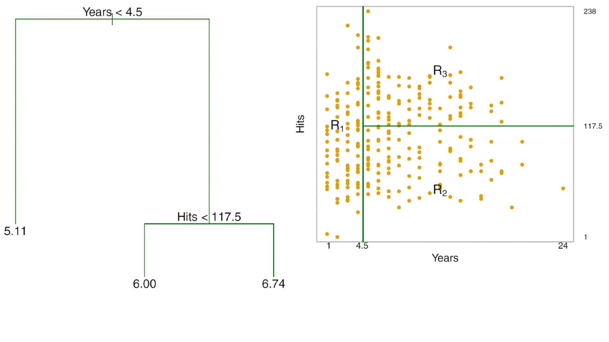

<!DOCTYPE html>
<html lang="es" xml:lang="es">
<head>

  <meta charset="utf-8" />
  <meta http-equiv="X-UA-Compatible" content="IE=edge" />
  <title>Capítulo 6 Arboles de decision | Politica Economica II</title>
  <meta name="description" content="UNLP" />
  <meta name="generator" content="bookdown 0.26 and GitBook 2.6.7" />

  <meta property="og:title" content="Capítulo 6 Arboles de decision | Politica Economica II" />
  <meta property="og:type" content="book" />
  
  <meta property="og:description" content="UNLP" />
  <meta name="github-repo" content="msangia/msangia.github" />

  <meta name="twitter:card" content="summary" />
  <meta name="twitter:title" content="Capítulo 6 Arboles de decision | Politica Economica II" />
  <meta name="twitter:site" content="@msangia" />
  <meta name="twitter:description" content="UNLP" />
  

<meta name="author" content="Máximo Sangiácomo" />


  <meta name="viewport" content="width=device-width, initial-scale=1" />
  <meta name="apple-mobile-web-app-capable" content="yes" />
  <meta name="apple-mobile-web-app-status-bar-style" content="black" />
  
  
<link rel="prev" href="logit.html"/>
<link rel="next" href="score.html"/>
<script src="libs/jquery-3.6.0/jquery-3.6.0.min.js"></script>
<script src="https://cdn.jsdelivr.net/npm/fuse.js@6.4.6/dist/fuse.min.js"></script>
<link href="libs/gitbook-2.6.7/css/style.css" rel="stylesheet" />
<link href="libs/gitbook-2.6.7/css/plugin-table.css" rel="stylesheet" />
<link href="libs/gitbook-2.6.7/css/plugin-bookdown.css" rel="stylesheet" />
<link href="libs/gitbook-2.6.7/css/plugin-highlight.css" rel="stylesheet" />
<link href="libs/gitbook-2.6.7/css/plugin-search.css" rel="stylesheet" />
<link href="libs/gitbook-2.6.7/css/plugin-fontsettings.css" rel="stylesheet" />
<link href="libs/gitbook-2.6.7/css/plugin-clipboard.css" rel="stylesheet" />


<link href="libs/anchor-sections-1.1.0/anchor-sections.css" rel="stylesheet" />
<link href="libs/anchor-sections-1.1.0/anchor-sections-hash.css" rel="stylesheet" />
<script src="libs/anchor-sections-1.1.0/anchor-sections.js"></script>
<html>
  <head>
	<link rel="shortcut icon" href="images/favicon.png" />
  </head>
  <body>
  </body>
</html>


<style type="text/css">
pre > code.sourceCode { white-space: pre; position: relative; }
pre > code.sourceCode > span { display: inline-block; line-height: 1.25; }
pre > code.sourceCode > span:empty { height: 1.2em; }
.sourceCode { overflow: visible; }
code.sourceCode > span { color: inherit; text-decoration: inherit; }
pre.sourceCode { margin: 0; }
@media screen {
div.sourceCode { overflow: auto; }
}
@media print {
pre > code.sourceCode { white-space: pre-wrap; }
pre > code.sourceCode > span { text-indent: -5em; padding-left: 5em; }
}
pre.numberSource code
  { counter-reset: source-line 0; }
pre.numberSource code > span
  { position: relative; left: -4em; counter-increment: source-line; }
pre.numberSource code > span > a:first-child::before
  { content: counter(source-line);
    position: relative; left: -1em; text-align: right; vertical-align: baseline;
    border: none; display: inline-block;
    -webkit-touch-callout: none; -webkit-user-select: none;
    -khtml-user-select: none; -moz-user-select: none;
    -ms-user-select: none; user-select: none;
    padding: 0 4px; width: 4em;
    color: #aaaaaa;
  }
pre.numberSource { margin-left: 3em; border-left: 1px solid #aaaaaa;  padding-left: 4px; }
div.sourceCode
  {   }
@media screen {
pre > code.sourceCode > span > a:first-child::before { text-decoration: underline; }
}
code span.al { color: #ff0000; font-weight: bold; } /* Alert */
code span.an { color: #60a0b0; font-weight: bold; font-style: italic; } /* Annotation */
code span.at { color: #7d9029; } /* Attribute */
code span.bn { color: #40a070; } /* BaseN */
code span.bu { } /* BuiltIn */
code span.cf { color: #007020; font-weight: bold; } /* ControlFlow */
code span.ch { color: #4070a0; } /* Char */
code span.cn { color: #880000; } /* Constant */
code span.co { color: #60a0b0; font-style: italic; } /* Comment */
code span.cv { color: #60a0b0; font-weight: bold; font-style: italic; } /* CommentVar */
code span.do { color: #ba2121; font-style: italic; } /* Documentation */
code span.dt { color: #902000; } /* DataType */
code span.dv { color: #40a070; } /* DecVal */
code span.er { color: #ff0000; font-weight: bold; } /* Error */
code span.ex { } /* Extension */
code span.fl { color: #40a070; } /* Float */
code span.fu { color: #06287e; } /* Function */
code span.im { } /* Import */
code span.in { color: #60a0b0; font-weight: bold; font-style: italic; } /* Information */
code span.kw { color: #007020; font-weight: bold; } /* Keyword */
code span.op { color: #666666; } /* Operator */
code span.ot { color: #007020; } /* Other */
code span.pp { color: #bc7a00; } /* Preprocessor */
code span.sc { color: #4070a0; } /* SpecialChar */
code span.ss { color: #bb6688; } /* SpecialString */
code span.st { color: #4070a0; } /* String */
code span.va { color: #19177c; } /* Variable */
code span.vs { color: #4070a0; } /* VerbatimString */
code span.wa { color: #60a0b0; font-weight: bold; font-style: italic; } /* Warning */
</style>

<style type="text/css">
/* Used with Pandoc 2.11+ new --citeproc when CSL is used */
div.csl-bib-body { }
div.csl-entry {
  clear: both;
}
.hanging div.csl-entry {
  margin-left:2em;
  text-indent:-2em;
}
div.csl-left-margin {
  min-width:2em;
  float:left;
}
div.csl-right-inline {
  margin-left:2em;
  padding-left:1em;
}
div.csl-indent {
  margin-left: 2em;
}
</style>

<link rel="stylesheet" href="css/style.css" type="text/css" />
<link rel="stylesheet" href="css/r4ds.css" type="text/css" />
</head>

<body>


  <div class="book without-animation with-summary font-size-2 font-family-1" data-basepath=".">

    <div class="book-summary">
      <nav role="navigation">

<ul class="summary">
<li><a href="./">Politica Economica II - UNLP</a></li>

<li class="divider"></li>
<li class="chapter" data-level="" data-path="index.html"><a href="index.html"><i class="fa fa-check"></i>Descripcion del curso</a></li>
<li class="chapter" data-level="1" data-path="intro.html"><a href="intro.html"><i class="fa fa-check"></i><b>1</b> Introduccion a R</a>
<ul>
<li class="chapter" data-level="1.1" data-path="intro.html"><a href="intro.html#primeros-pasos"><i class="fa fa-check"></i><b>1.1</b> Primeros pasos</a></li>
<li class="chapter" data-level="1.2" data-path="intro.html"><a href="intro.html#busacar-ayuda"><i class="fa fa-check"></i><b>1.2</b> Busacar ayuda</a></li>
<li class="chapter" data-level="1.3" data-path="intro.html"><a href="intro.html#tipos-de-datos"><i class="fa fa-check"></i><b>1.3</b> Tipos de datos</a></li>
<li class="chapter" data-level="1.4" data-path="intro.html"><a href="intro.html#limpieza-de-memoria"><i class="fa fa-check"></i><b>1.4</b> Limpieza de memoria</a></li>
<li class="chapter" data-level="1.5" data-path="intro.html"><a href="intro.html#asignación-de-valores"><i class="fa fa-check"></i><b>1.5</b> Asignación de valores</a></li>
<li class="chapter" data-level="1.6" data-path="intro.html"><a href="intro.html#operadores-aritméticos"><i class="fa fa-check"></i><b>1.6</b> Operadores aritméticos</a></li>
<li class="chapter" data-level="1.7" data-path="intro.html"><a href="intro.html#operadores-relacionales"><i class="fa fa-check"></i><b>1.7</b> Operadores relacionales</a></li>
<li class="chapter" data-level="1.8" data-path="intro.html"><a href="intro.html#operadores-lógicos"><i class="fa fa-check"></i><b>1.8</b> Operadores lógicos</a></li>
</ul></li>
<li class="chapter" data-level="2" data-path="bd.html"><a href="bd.html"><i class="fa fa-check"></i><b>2</b> Base de datos</a>
<ul>
<li class="chapter" data-level="2.1" data-path="bd.html"><a href="bd.html#directorio-de-trabajo"><i class="fa fa-check"></i><b>2.1</b> Directorio de trabajo</a></li>
<li class="chapter" data-level="2.2" data-path="bd.html"><a href="bd.html#cargar-datos"><i class="fa fa-check"></i><b>2.2</b> Cargar datos</a>
<ul>
<li class="chapter" data-level="2.2.1" data-path="bd.html"><a href="bd.html#ingrasar-datos-con-tidyverse"><i class="fa fa-check"></i><b>2.2.1</b> Ingrasar datos con <code>tidyverse</code></a></li>
</ul></li>
<li class="chapter" data-level="2.3" data-path="bd.html"><a href="bd.html#exportar-datos"><i class="fa fa-check"></i><b>2.3</b> Exportar datos</a></li>
<li class="chapter" data-level="2.4" data-path="bd.html"><a href="bd.html#pipe"><i class="fa fa-check"></i><b>2.4</b> Pipe</a></li>
<li class="chapter" data-level="2.5" data-path="bd.html"><a href="bd.html#variables"><i class="fa fa-check"></i><b>2.5</b> Variables</a></li>
<li class="chapter" data-level="2.6" data-path="bd.html"><a href="bd.html#merge"><i class="fa fa-check"></i><b>2.6</b> Merge</a></li>
<li class="chapter" data-level="2.7" data-path="bd.html"><a href="bd.html#variables-group_by-mutate"><i class="fa fa-check"></i><b>2.7</b> Variables: group_by, mutate</a></li>
<li class="chapter" data-level="2.8" data-path="bd.html"><a href="bd.html#guardar-datos"><i class="fa fa-check"></i><b>2.8</b> Guardar datos</a></li>
<li class="chapter" data-level="2.9" data-path="bd.html"><a href="bd.html#valores-missing"><i class="fa fa-check"></i><b>2.9</b> Valores missing</a></li>
<li class="chapter" data-level="2.10" data-path="bd.html"><a href="bd.html#análisis-de-datos"><i class="fa fa-check"></i><b>2.10</b> Análisis de datos</a>
<ul>
<li class="chapter" data-level="2.10.1" data-path="bd.html"><a href="bd.html#tablas"><i class="fa fa-check"></i><b>2.10.1</b> Tablas</a></li>
</ul></li>
<li class="chapter" data-level="2.11" data-path="bd.html"><a href="bd.html#group_by-summarise"><i class="fa fa-check"></i><b>2.11</b> group_by, summarise</a></li>
<li class="chapter" data-level="2.12" data-path="bd.html"><a href="bd.html#gráficos"><i class="fa fa-check"></i><b>2.12</b> Gráficos</a></li>
<li class="chapter" data-level="2.13" data-path="bd.html"><a href="bd.html#ggplot"><i class="fa fa-check"></i><b>2.13</b> GGPlot</a></li>
<li class="chapter" data-level="2.14" data-path="bd.html"><a href="bd.html#guardar-un-gráfico"><i class="fa fa-check"></i><b>2.14</b> Guardar un gráfico</a></li>
</ul></li>
<li class="chapter" data-level="3" data-path="conceptos.html"><a href="conceptos.html"><i class="fa fa-check"></i><b>3</b> Conceptos generales</a>
<ul>
<li class="chapter" data-level="3.1" data-path="conceptos.html"><a href="conceptos.html#estimacion"><i class="fa fa-check"></i><b>3.1</b> Estimacion</a></li>
<li class="chapter" data-level="3.2" data-path="conceptos.html"><a href="conceptos.html#prediccion"><i class="fa fa-check"></i><b>3.2</b> Prediccion</a></li>
<li class="chapter" data-level="3.3" data-path="conceptos.html"><a href="conceptos.html#metodos-parametricos"><i class="fa fa-check"></i><b>3.3</b> Metodos parametricos</a></li>
<li class="chapter" data-level="3.4" data-path="conceptos.html"><a href="conceptos.html#metodos-no-parametricos"><i class="fa fa-check"></i><b>3.4</b> Metodos no parametricos</a></li>
<li class="chapter" data-level="3.5" data-path="conceptos.html"><a href="conceptos.html#evaluacion-de-la-precision-del-modelo"><i class="fa fa-check"></i><b>3.5</b> Evaluacion de la precision del modelo</a>
<ul>
<li class="chapter" data-level="3.5.1" data-path="conceptos.html"><a href="conceptos.html#ajuste"><i class="fa fa-check"></i><b>3.5.1</b> Calidad del ajuste</a></li>
<li class="chapter" data-level="3.5.2" data-path="conceptos.html"><a href="conceptos.html#trade-off-sesgo-varianza"><i class="fa fa-check"></i><b>3.5.2</b> Trade-off Sesgo-Varianza</a></li>
<li class="chapter" data-level="3.5.3" data-path="conceptos.html"><a href="conceptos.html#clasificacion"><i class="fa fa-check"></i><b>3.5.3</b> Clasificacion</a></li>
<li class="chapter" data-level="3.5.4" data-path="conceptos.html"><a href="conceptos.html#confusion"><i class="fa fa-check"></i><b>3.5.4</b> Matriz de confusion</a></li>
</ul></li>
<li class="chapter" data-level="3.6" data-path="conceptos.html"><a href="conceptos.html#resumen"><i class="fa fa-check"></i><b>3.6</b> Resumen</a></li>
</ul></li>
<li class="chapter" data-level="4" data-path="mco.html"><a href="mco.html"><i class="fa fa-check"></i><b>4</b> Regresion lineal</a>
<ul>
<li class="chapter" data-level="4.1" data-path="mco.html"><a href="mco.html#relacion-entre-estimacion-optima-y-prediccion-optima"><i class="fa fa-check"></i><b>4.1</b> Relacion entre estimacion optima y prediccion optima</a></li>
<li class="chapter" data-level="4.2" data-path="mco.html"><a href="mco.html#aplicacion-practica"><i class="fa fa-check"></i><b>4.2</b> Aplicacion practica</a></li>
</ul></li>
<li class="chapter" data-level="5" data-path="logit.html"><a href="logit.html"><i class="fa fa-check"></i><b>5</b> Logit</a>
<ul>
<li class="chapter" data-level="5.1" data-path="logit.html"><a href="logit.html#modelo-logit"><i class="fa fa-check"></i><b>5.1</b> Modelo <em>logit</em></a>
<ul>
<li class="chapter" data-level="5.1.1" data-path="logit.html"><a href="logit.html#interpretacion-de-coeficientes-en-el-modelo-logit"><i class="fa fa-check"></i><b>5.1.1</b> Interpretacion de coeficientes en el modelo <em>logit</em></a></li>
</ul></li>
<li class="chapter" data-level="5.2" data-path="logit.html"><a href="logit.html#aplicacion-practica-1"><i class="fa fa-check"></i><b>5.2</b> Aplicacion practica</a></li>
</ul></li>
<li class="chapter" data-level="6" data-path="arboles.html"><a href="arboles.html"><i class="fa fa-check"></i><b>6</b> Arboles de decision</a>
<ul>
<li class="chapter" data-level="6.1" data-path="arboles.html"><a href="arboles.html#classification-and-regression-tree-cart"><i class="fa fa-check"></i><b>6.1</b> <em>Classification and Regression Tree</em> (CART)</a></li>
<li class="chapter" data-level="6.2" data-path="arboles.html"><a href="arboles.html#bagging"><i class="fa fa-check"></i><b>6.2</b> Bagging</a></li>
<li class="chapter" data-level="6.3" data-path="arboles.html"><a href="arboles.html#random-forest"><i class="fa fa-check"></i><b>6.3</b> Random Forest</a></li>
</ul></li>
<li class="chapter" data-level="7" data-path="score.html"><a href="score.html"><i class="fa fa-check"></i><b>7</b> Trabajo Practico</a>
<ul>
<li class="chapter" data-level="7.1" data-path="score.html"><a href="score.html#reglas-del-trabajo-practico"><i class="fa fa-check"></i><b>7.1</b> Reglas del Trabajo practico</a></li>
<li class="chapter" data-level="7.2" data-path="score.html"><a href="score.html#enunciado-del-trabajo-practico"><i class="fa fa-check"></i><b>7.2</b> Enunciado del Trabajo Practico</a></li>
<li class="chapter" data-level="7.3" data-path="score.html"><a href="score.html#aplicacion-practica-2"><i class="fa fa-check"></i><b>7.3</b> Aplicacion practica</a></li>
</ul></li>
<li class="chapter" data-level="" data-path="bibliografia.html"><a href="bibliografia.html"><i class="fa fa-check"></i>Bibliografia</a></li>
<li class="divider"></li>
<li><a href="./" target="blank">Maximo Sangiacomo</a></li>

</ul>

      </nav>
    </div>

    <div class="book-body">
      <div class="body-inner">
        <div class="book-header" role="navigation">
          <h1>
            <i class="fa fa-circle-o-notch fa-spin"></i><a href="./">Politica Economica II</a>
          </h1>
        </div>

        <div class="page-wrapper" tabindex="-1" role="main">
          <div class="page-inner">

            <section class="normal" id="section-">
<link href="css/style.css" rel="stylesheet">
<div class="hero-image-container"> 
  
</div>
<div id="arboles" class="section level1 hasAnchor" number="6">
<h1><span class="header-section-number">Capítulo 6</span> Arboles de decision<a href="arboles.html#arboles" class="anchor-section" aria-label="Anchor link to header"></a></h1>
<p>Los métodos basados en árboles para regresión y clasificación estratifican o segmentan el espacio predictor en varias regiones. Para hacer una predicción para una observación dada normalmente utiliza el valor de respuesta promedio de las observaciones de la base de entrenamiento en la región a la que pertenece. En el caso de clasificación se asigna a la categoría mayoritaria dentro del nodo terminal.</p>
<div id="classification-and-regression-tree-cart" class="section level2 hasAnchor" number="6.1">
<h2><span class="header-section-number">6.1</span> <em>Classification and Regression Tree</em> (CART)<a href="arboles.html#classification-and-regression-tree-cart" class="anchor-section" aria-label="Anchor link to header"></a></h2>
<p>En el caso de árboles de regresión, si <span class="math inline">\(Y\)</span> es la respuesta y <span class="math inline">\(X_1\)</span> y <span class="math inline">\(X_2\)</span> los <em>inputs</em> se parte el espacio <span class="math inline">\((X_1, X_2)\)</span> en dos regiones, en base a una sola variable (partición horizontal o vertical). Dentro de cada región proponemos como predicción la media muestral de <span class="math inline">\(Y\)</span> en cada región.</p>
<p>Se busca elegir la variable y el punto de partición de manera óptima (mejor ajuste global). Es computacionalmente inviable considerar cada posible partición del espacio de atributos en <span class="math inline">\(J\)</span> regiones. Por lo tanto, toma un enfoque <em>top-down greedy</em> que se conoce como división binaria recursiva. El enfoque es <em>top-down</em> porque comienza en la parte superior del árbol (en cuyo punto todas las observaciones pertenecen a una sola región) y luego divide sucesivamente el espacio predictor; cada división se indica a través de dos nuevas ramas más abajo en el árbol. Es <em>greedy</em> porque en cada paso del proceso de construcción del árbol, la mejor división se hace en ese paso en particular, en lugar de mirar hacia adelante y elegir una división que conducirá a un mejor árbol en algún paso futuro.</p>
<p>El panel izquierdo de la Figura <a href="arboles.html#fig:tree">6.1</a> muestra un árbol de regresión para predecir el logaritmo del salario (en miles de dólares) de un jugador de béisbol, basado en la cantidad de años que ha jugado en las ligas mayores y la cantidad de <em>hits</em> que hizo en el año anterior. En un un nodo interno dado, la etiqueta (de la forma <span class="math inline">\(X_j &lt; t_k\)</span>) indica la rama izquierda que sale de esa división, y la rama de la derecha corresponde a <span class="math inline">\(X_j \ge t_k\)</span>. Por ejemplo, la división en la parte superior del árbol da como resultado dos ramas grandes. El la rama izquierda corresponde a <code>Years &lt; 4,5</code>, y la rama derecha corresponde a <code>Years &gt;= 4,5</code>.<a href="#fn11" class="footnote-ref" id="fnref11"><sup>11</sup></a> El árbol tiene dos nodos internos y tres nodos terminales u hojas. El número en cada hoja es la media de la variable de respuesta de las observaciones que caen allí. Por ejemplo, la predicción para el nodo terminal de la izquierda es <span class="math inline">\(e^{5,107} \times 1.000 = \$165.174\)</span>. El panel derecho la Figura <a href="arboles.html#fig:tree">6.1</a> muestra las regiones en función de <code>Years</code> y <code>Hits</code>.</p>
<div class="figure" style="text-align: center"><span style="display:block;" id="fig:tree"></span>

<p class="caption">
Figura 6.1: Arbol de regresión
</p>
</div>
<p>Notar:</p>
<ul>
<li><p>Cada región tiene su propio modelo.</p></li>
<li><p>Ciertas variables importan en determinadas regiones y no en otras (<em>Hits</em>).</p></li>
</ul>
<p>Dado <span class="math inline">\(Y\)</span> y <span class="math inline">\(X\)</span> un vector de <span class="math inline">\(p\)</span> variables con <span class="math inline">\(n\)</span> observaciones el algoritmo busca determinar cuál variable usar para la partición y que punto de esa variable usar para la partición. Si <span class="math inline">\(j\)</span> es la variable de partición y el punto de partición es <span class="math inline">\(s\)</span>, se definen los siguientes semiplanos:</p>
<p><span class="math display">\[\begin{align*}
  R_1(j,s) = &amp; {X \mid X_j &lt; s} \\
  R_2(j,s) = &amp; {X \mid X_j \ge s}
\end{align*}\]</span></p>
<p>Se trata de buscar la variable de partición <span class="math inline">\(X_j\)</span> y el punto de partición <span class="math inline">\(s\)</span> que resuelvan (minimizar el <span class="math inline">\(EMC\)</span> en cada región):</p>
<p><span class="math display" id="eq:region">\[\begin{equation}
\tag{6.1}
  \sum_{i: x_i \in R_1(j,s)} (y_i - \hat{y}_{R_1})^2 +  \sum_{i: x_i \in R_2(j,s)} (y_i - \hat{y}_{R_2})^2
\end{equation}\]</span></p>
<p>Donde <span class="math inline">\(\hat{y}_{R_1}\)</span> y <span class="math inline">\(\hat{y}_{R_2}\)</span> es el promedio de la respuesta en las regiones <span class="math inline">\(1\)</span> y <span class="math inline">\(2\)</span>, respectivamente. Para cada variable y punto de partición, la minimización interna se corresponde con la <strong>media</strong> dentro de cada región.<a href="#fn12" class="footnote-ref" id="fnref12"><sup>12</sup></a></p>
<p><strong>¿Cuándo parar de realizar divisiones?</strong></p>
<p>Un árbol demasiado extenso sobreajusta (<em>overfit</em>) los datos. Pero dado que el proceso es secuencial y cada corte no mira lo que puede suceder después, si se detiene el proceso demasiado pronto se puede perder un “gran” corte más abajo. <em>Prunning</em>: ajustar un árbol grande y luego podarlo (<em>prune</em>) usando un criterio de <em>cost-complexity</em>.</p>
<p><strong><em>Classification tree</em></strong></p>
<p>Un árbol de clasificación es muy similar a un árbol de regresión, excepto que se utiliza para predecir una respuesta cualitativa en lugar de una cuantitativa. Recordar que para un árbol de regresión, la respuesta predicha para una observación esta dada por la respuesta media de las observaciones de entrenamiento que pertenecen al mismo nodo terminal. En contraste, para un árbol de clasificación, predice que cada observación pertenece a la clase que ocurre más comúnmente en las observaciones de entrenamiento en la región a la que pertenece. Se basa en el error de clasificación o índice de Gini (pureza), análogo a <span class="math inline">\(EMC\)</span> en un árbol de regresión.</p>
</div>
<div id="bagging" class="section level2 hasAnchor" number="6.2">
<h2><span class="header-section-number">6.2</span> Bagging<a href="arboles.html#bagging" class="anchor-section" aria-label="Anchor link to header"></a></h2>
<p>Ventajas y desventajas de <span class="math inline">\(CART\)</span>:</p>
<ul>
<li><p>Forma inteligente de representar no linealidades.</p></li>
<li><p>Arriba quedan las variables más relevantes entonces es fácil de comunicar. Reproduce proceso decisorio humano.</p></li>
<li><p>Si la estructura es lineal, <span class="math inline">\(CART\)</span> no anda bien.</p></li>
<li><p>Poco robusto, variaciones en los datos modifican el resultado.</p></li>
</ul>
<p>Un método de <em>ensemble</em> es un enfoque que combina muchos modelos simples en uno único y potencialmente muy poderoso. Los modelos simples se conocen como modelos de aprendizaje débil, ya que por sí mismos pueden generar predicciones mediocres.</p>
<p>Una posible solución es el <em>bootstrap aggregation</em> que consiste en tomar como predicción el promedio de las predicciones <em>bootstrap</em>.<a href="#fn13" class="footnote-ref" id="fnref13"><sup>13</sup></a></p>
<p><span class="math display" id="eq:bag">\[\begin{equation}
\tag{6.2}
   \hat{f}_{bag} = \frac{1}{B} \sum_{b=1}^{B} \hat{f}^{*b}(x)
\end{equation}\]</span></p>
<p>Esta idea se basa en que la varianza del promedio es menor que la de una predicción sola. Bajo independencia si <span class="math inline">\(V(x) = \sigma^2\)</span> entonces <span class="math inline">\(V(\overline{x}) = \frac{\sigma^2}{n}\)</span>. Pero existe el <strong>problema</strong> que si hay un predictor fuerte (siempre va a ser seleccionado primero), los distintos árboles son muy similares entre sí por lo que habrá alta correlación.</p>
</div>
<div id="random-forest" class="section level2 hasAnchor" number="6.3">
<h2><span class="header-section-number">6.3</span> Random Forest<a href="arboles.html#random-forest" class="anchor-section" aria-label="Anchor link to header"></a></h2>
<p>Busca bajar la correlación entre los árboles del <em>bootstrap</em>. Al igual que en <em>bagging</em>, construye una serie de árboles de decisión en muestras de entrenamiento <em>bootstrap</em>. Pero al construir estos árboles de decisión, cada vez que se considera una división en un árbol, se elige como candidatos de división una muestra aleatoria de <span class="math inline">\(m\)</span> predictores del conjunto completo de <span class="math inline">\(p\)</span> predictores (<span class="math inline">\(m &lt; p\)</span>).</p>

</div>
</div>
<div class="footnotes">
<hr />
<ol start="11">
<li id="fn11"><p>Al estar arriba, <code>Years</code> es la variable más importante para explicar el salario.<a href="arboles.html#fnref11" class="footnote-back">↩︎</a></p></li>
<li id="fn12"><p>Recordar que si se quiere predecir una variable aleatoria <span class="math inline">\(Y\)</span> con una constante <span class="math inline">\(m\)</span> el mejor predictor es su esperanza, es decir, <span class="math inline">\(m = E(Y)\)</span>.<a href="arboles.html#fnref12" class="footnote-back">↩︎</a></p></li>
<li id="fn13"><p>Es decir, muestreo con reemplazo.<a href="arboles.html#fnref13" class="footnote-back">↩︎</a></p></li>
</ol>
</div>
            </section>

          </div>
        </div>
      </div>
<a href="logit.html" class="navigation navigation-prev " aria-label="Previous page"><i class="fa fa-angle-left"></i></a>
<a href="score.html" class="navigation navigation-next " aria-label="Next page"><i class="fa fa-angle-right"></i></a>
    </div>
  </div>
<script src="libs/gitbook-2.6.7/js/app.min.js"></script>
<script src="libs/gitbook-2.6.7/js/clipboard.min.js"></script>
<script src="libs/gitbook-2.6.7/js/plugin-search.js"></script>
<script src="libs/gitbook-2.6.7/js/plugin-sharing.js"></script>
<script src="libs/gitbook-2.6.7/js/plugin-fontsettings.js"></script>
<script src="libs/gitbook-2.6.7/js/plugin-bookdown.js"></script>
<script src="libs/gitbook-2.6.7/js/jquery.highlight.js"></script>
<script src="libs/gitbook-2.6.7/js/plugin-clipboard.js"></script>
<script>
gitbook.require(["gitbook"], function(gitbook) {
gitbook.start({
"sharing": {
"github": false,
"facebook": true,
"twitter": true,
"linkedin": false,
"weibo": false,
"instapaper": false,
"vk": false,
"whatsapp": false,
"all": ["facebook", "twitter", "linkedin", "weibo", "instapaper"]
},
"fontsettings": {
"theme": "white",
"family": "sans",
"size": 2
},
"edit": {
"link": null,
"text": null
},
"history": {
"link": null,
"text": null
},
"view": {
"link": null,
"text": null
},
"download": ["NotasTP.pdf"],
"search": {
"engine": "fuse",
"options": null
},
"toc": {
"collapse": "subsection"
}
});
});
</script>

<!-- dynamically load mathjax for compatibility with self-contained -->
<script>
  (function () {
    var script = document.createElement("script");
    script.type = "text/javascript";
    var src = "true";
    if (src === "" || src === "true") src = "https://mathjax.rstudio.com/latest/MathJax.js?config=TeX-MML-AM_CHTML";
    if (location.protocol !== "file:")
      if (/^https?:/.test(src))
        src = src.replace(/^https?:/, '');
    script.src = src;
    document.getElementsByTagName("head")[0].appendChild(script);
  })();
</script>
</body>

</html>
